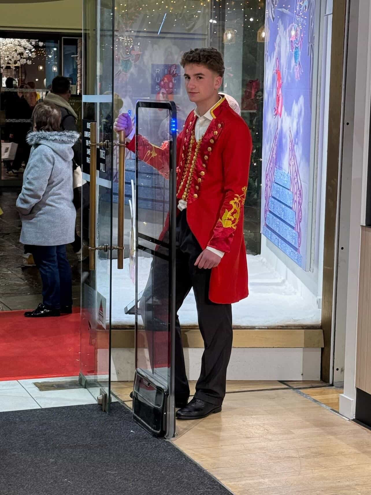

Maxime Lorne, 20 ans : portrait d'un étudiant en GEA qui ne fait pas semblant
Maxime Lorne entre cette année en première année de BUT Gestion des Entreprises et des Administrations à Orléans. Son projet : viser la spécialité GEMA en deuxième année. Son argument : un parcours associatif, sportif et numérique qui ne ressemble pas à grand-chose de standard.
Avant Orléans, il y a eu Le Mans. Le lycée Notre-Dame, le bac général avec spécialités HGGSP, SES et LLCE Anglais, des résultats corrects, une orientation choisie sans précipitation. Pas de prépa HEC. Pas d'école de commerce. Un BUT GEA, parce que le rythme professionnalisant lui parlait.
Maxime a derrière lui dix années de scoutisme dont trois comme chef d'équipe, une Préparation Militaire Marine au sein du 2e RIMa, plus de 1 500 km marchés sur les chemins de Saint-Jacques-de-Compostelle en famille, et un an et demi de maraudes dominicales pour distribuer des repas aux sans-abris du Mans.
Aujourd'hui il préside l'association « La 4L sans freins » dont l'objectif est le 4L Trophy 2027. Il gère par ailleurs un compte Instagram engagé qui rassemble plus de 37 000 abonnés. La spécialité GEMA, qui forme à l'entrepreneuriat et au management d'activités, est dans le prolongement direct de ce qu'il fait déjà.
